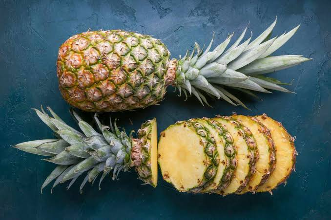
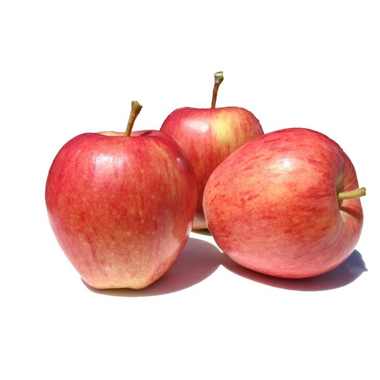
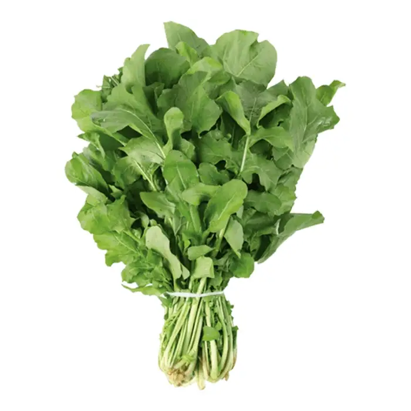
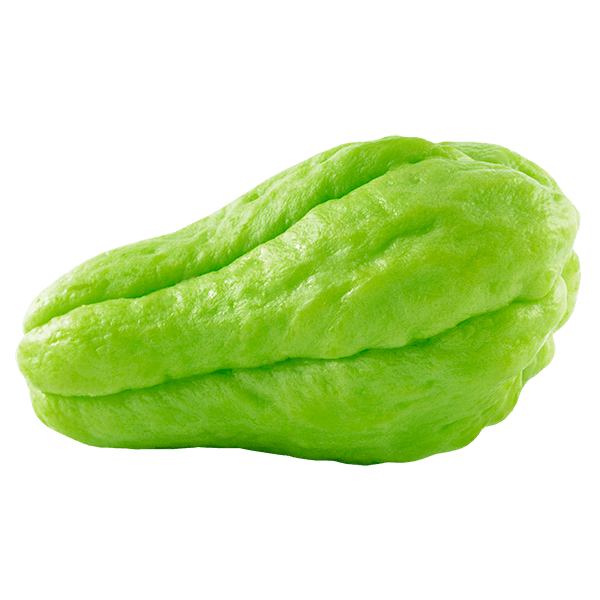
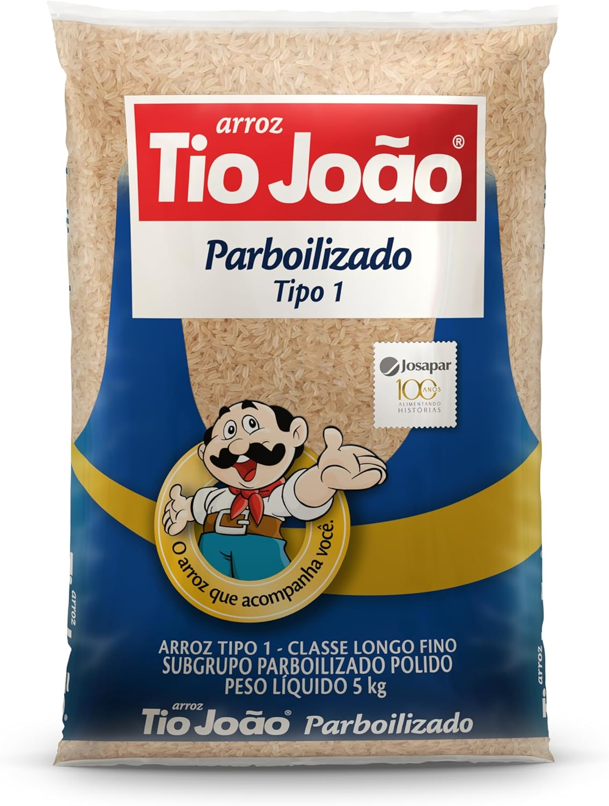
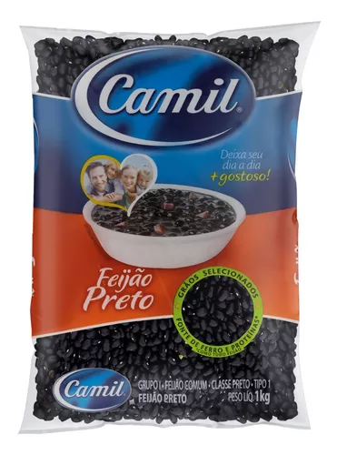
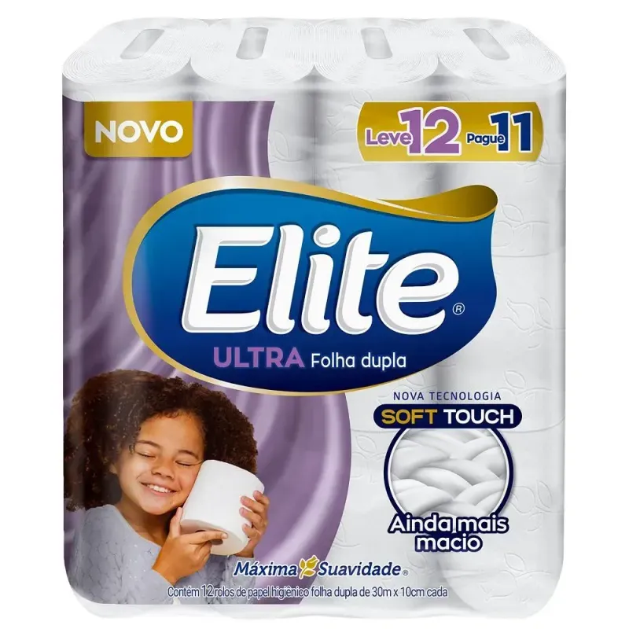

Seja bem-vindo ao MINIMERCADO SILVEIRA, aqui você encontra variedade nos diversos produtos oferecidos.
Aberto das 08:00 até 21:00, pedidos de tele-entrega são realizados até as 19:00. Entre em contato no nosso Whatsapp e realize seu pedido.
Frutas:

Abacaxi Formoso
R$ 11,90 un.
Rico em antioxidantes, como vitamina C e betacaroteno, o abacaxi ajuda a combater o estresse oxidativo e a prevenir o envelhecimento precoce. Saiba mais.

Maça Gala
R$ 5,90 kg.
A maçã é uma fruta que ajuda a prevenir doenças cardiovasculares e a diabetes, combater a prisão de ventre e evitar o envelhecimento precoce e fortalecer o sistema imunológico. Saiba mais.
Verduras:

Rúcula
R$ 3,00 un.
Fonte de vitamina C, a rúcula fortalece o sistema imunológico, ajudando a eliminar radicais livres. Dessa forma, ao consumir a hortaliça, o corpo responde melhor aos processos infecciosos e ao estresse oxidativo. Saiba mais.

Chuchu
R$ 12,99 kg.
o chuchu atua como anti-inflamatório e fortalece a imunidade, graças à presença de vitamina C e zinco em sua composição. Saiba mais.
Não pereciveis:

Arroz
R$ 36,99 - Pacote com 5kg.
O arroz é uma boa a fonte de sais minerais, como o fósforo, ferro, potássio e vitaminas (tiamina, riboflavina e niacina). Além disso, o arroz não contém colesterol, é de fácil digestão e é indicado na convalescença de quase todas as doenças. Saiba mais.

Feijão - Pacote com 1kg.
R$ 12,99 -
O feijão preto é uma excelente fonte de nutrientes essenciais para a saúde. Ele é rico em proteínas, fibras, vitaminas do complexo B, ferro, magnésio e potássio. Saiba mais.
Limpeza e cuidado pessoal:
Creme dental.
R$ 2,99 un
Creme dental tem várias funções, não só permitindo a redução da cárie dentária (através do flúor), mas também objetivando a redução da gengivite e da periodontite, acúmulo de tártaro, favorecendo a remoção de manchas extrínsecas e a redução da halitose, entre outras ações. Saiba mais.

Papel Higiênico
R$ 14,90 - 12 rolos com 30 metros cada.
O papel higiênico é um item de higiene essencial que pode ajudar a manter padrões de higiene e reduzir o risco de contaminação. Saiba mais.